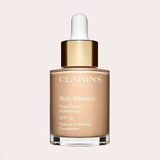
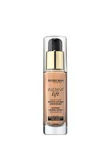
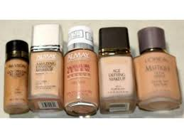
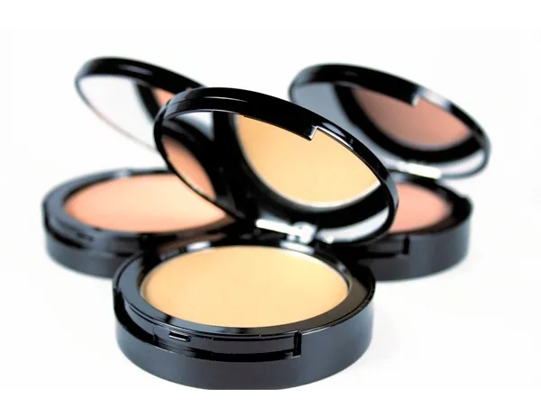

Catálogo Maquillaje
THE BEST MAKEUP OF YULIANA
Página principal
Labial
Sombras de ojos
Base y brochas
Delineadores
Cremas para el rostro y corporales
BIENVENIDOS
Aquí en nuestra tienda de catálogos encontrará las mejores bases y tono para que lusca fabulosamente divina
Tipos de Base
Bases líquidas

Bases en crema

Bases de polvo comprimido
Bases de polvo mineral
Bases BB Cream
Bases en barra
Tono
T1- Q255
B2 - Q100
L3 - Q95
E4 - Q225
S5 - Q325
 